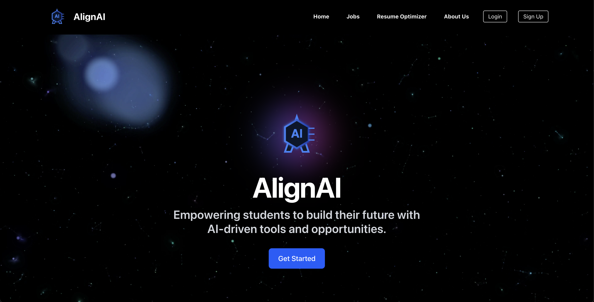
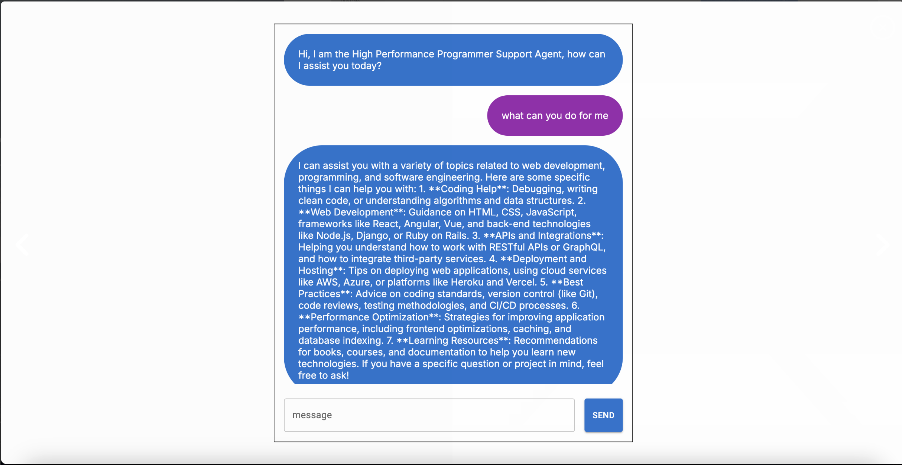
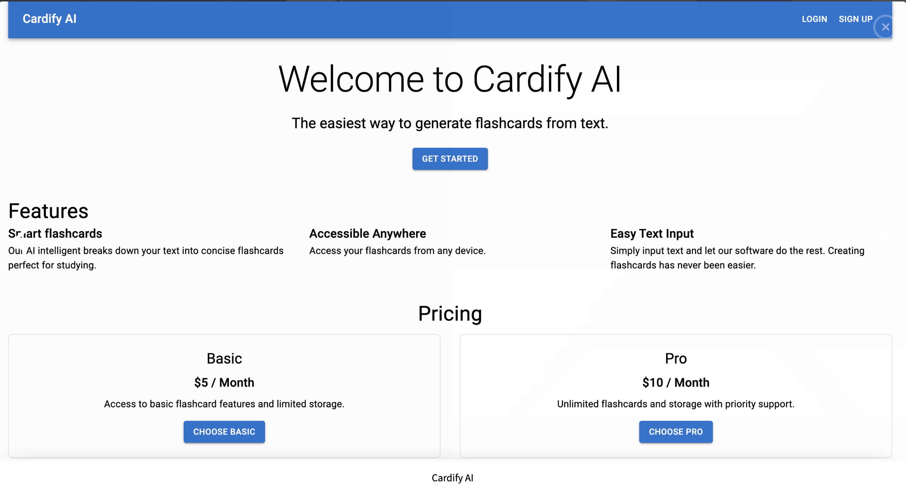
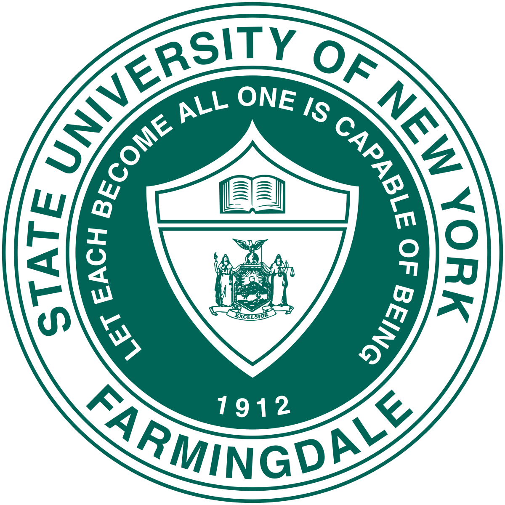

I specialize in developing efficient, user-focused web applications that integrate clean interfaces with reliable backend systems. Currently, I serve as a Software Engineering Intern at Cowan Consulting LC, where I build and enhance full-stack features using React, Firebase, and Stripe for production-level client platforms. Beyond my professional experience, I'm immersing myself deeper into the world of artificial intelligence and large language models—exploring how modern AI tools can improve productivity, learning, and real-world problem solving.
Farmingdale State College, SUNY
Bachelor of Science in Computer Science
Expected Graduation: June 2026
GPA: 3.62/4.00
Relevant Coursework: Data Structures, Algorithms, Database Systems, Web Development, Software Engineering, Artificial Intelligence

An award-winning AI resume optimizer and job matcher built with OpenAI, Adzuna, and Firebase. Delivered a working MVP in under 24 hours, winning Best AI Use at a university hackathon and generating over 100 successful job matches.

A simple web-based chatbot capable of generating intelligent, conversational responses. Developed using HTML, CSS, and JavaScript to demonstrate front-end logic and API integration.

A responsive web application that transforms text into AI-driven flashcards for efficient learning. Built with React and Firebase, it focuses on accessibility, intuitive design, and seamless user experience.
At Cowan Consulting, I work as a Software Engineer Intern developing high-performance full-stack web applications for hospitality and real estate clients. Using React, Node.js, and Firebase, I've engineered 4+ production-level platforms that improved user engagement by 25% through responsive UI and real-time features.

During my research internship at Farmingdale State College, I contributed to a LLaMA-based AI tutoring system designed to enhance programming education. I organized and optimized 180+ multi-turn Java tutoring dialogues, improving syntax consistency and concept progression for training data.
As the founder and lead engineer at To100 Media, I've built and launched 2+ SEO-optimized, mobile-responsive websites that boosted client web traffic by 20% and increased client acquisition by 15% within three months. I manage the complete development lifecycle from technical planning to deployment.
As a Software Engineering Fellow at Headstarter AI, I built and deployed 5+ AI-powered applications and APIs using Next.js, OpenAI, Pinecone, and Stripe API, achieving 98% accuracy with a target user base of 1,000+ users. I led 4+ engineering fellows through the full development lifecycle.